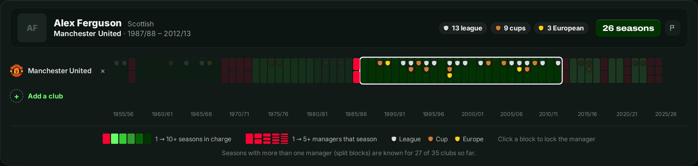
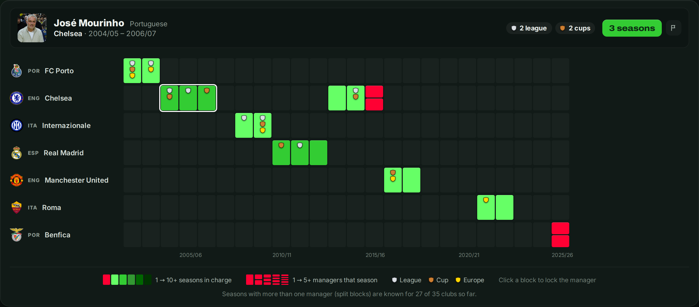

Sir Alex Ferguson stayed at Manchester United for 27 seasons. José Mourinho has never lasted three and a half years at one club. Both won almost everything there is to win. The story that opens this site sets them side by side; this is the longer version, with the numbers behind it.
They stand for two ways of running a football club. The Architect is given time, builds a team, then builds the next one. The Journeyman is hired to win now, does so, and moves on before the bill arrives. Which one wins more? The honest answer is less obvious than the romantic one.
A carousel that is not speeding up
It is tempting to think the long reign belongs to a patient past. The data says otherwise. Across the 35 clubs on this site, a manager has lasted about two seasons on average in every decade since the 1960s: 2.2 seasons in the sixties and seventies, 2.0 in the nineties, 2.0 in the 2010s. About one season in four has seen more than one manager. The carousel has always turned at this speed. Ferguson was not the rule of an older era; he was the exception in every era.
The Architect: Ferguson
His start gave no hint of what was coming. Ferguson arrived at Old Trafford in November 1986, and his first trophy came only in his fourth season, the FA Cup of 1990. In December 1989 a fan held up a banner reading "3 years of excuses and we're still crap. Ta-ra Fergie." The board kept him. His first league title followed in 1992/93, his seventh season.

What the timeline shows best is that Ferguson built more than one team. The titles of the mid-nineties came with the "Class of '92", the European Cup of 1999 with a squad that had grown up together, and the run of 2007 to 2009 with a new side around Cristiano Ronaldo and Wayne Rooney. He kept control by keeping everyone on edge. The "hairdryer treatment" became part of the club's folklore, and in 2003 a boot he kicked across the dressing room cut David Beckham above the eye. Beckham was sold that summer.
By the count used on this site, Ferguson won 25 trophies in 27 seasons: 13 league titles, 9 domestic cups and 3 European trophies. That is 0.93 trophies per season.
Johan Cruyff is the other great Architect in the data, although his reign at Barcelona (1988 to 1996) was shorter. In eight seasons he delivered the club's first European Cup in 1992 and four league titles in a row, and he left behind a way of playing that his former players, Pep Guardiola first among them, carried on. Cruyff never doubted himself:
"If I wanted you to understand it, I would have explained it better."
The Journeyman: Mourinho
Mourinho is the prototype of the other model. His career is a tour of Europe's biggest clubs, run on an "us against the world" mentality. In 2005, banned from the touchline for a Champions League match against Bayern Munich, he is said to have stayed in the Chelsea dressing room and to have been wheeled out of the stadium in a laundry basket afterwards. It sums up how he works: the siege is part of the method.

The route is well known: a Champions League with Porto in 2004, two league titles with Chelsea, the treble with Internazionale in 2010, a league title with Real Madrid. Then he leaves, or is asked to leave. After the treble, Inter president Massimo Moratti said he felt "a bit abandoned". The pattern is visible in the data too. His third seasons were his weakest: only the domestic cups at Chelsea in 2006/07, nothing at Real Madrid in 2012/13, and at Chelsea in 2015/16 he was gone by December.
And yet the numbers do not favour the Architect. In this dataset Mourinho has 20 trophies in 18 seasons: 1.11 per season, more than Ferguson's 0.93. The reason is not that short stays are better. Mourinho chose his clubs, and he chose clubs that were ready to win. Ferguson built a winning club from one that had not won the league since 1967. A trophy count measures what a manager won, not what he left behind.
Between the two: Ancelotti and Clough
Carlo Ancelotti shows that the Journeyman does not have to burn out. In this dataset he managed seven clubs in 21 seasons and won 15 trophies, including league titles in Italy, England, France, Germany and Spain. He is the only manager to have done that, and he holds the record of five Champions League titles as a manager. Where Mourinho's returns tend to go wrong, Ancelotti's second spell at Real Madrid (2021 to 2025) was better than his first: five trophies in four seasons, among them two Champions Leagues.
Brian Clough, who never managed any of the clubs in this dataset, is the Architect who could not stay anywhere big. He won the league with two unfashionable clubs, Derby County and Nottingham Forest, and two European Cups with Forest. His one job at a big club, Leeds United in 1974, lasted 44 days. He reportedly told the reigning champions in his first talk that they could throw their medals in the bin, because they had won them by cheating.
So which path wins?
Long reigns and trophies do go together. Seasons with more than one manager bring a trophy 17% of the time; seasons within a reign of ten or more full seasons, 53%. But the arrow points both ways: winning is also the surest way to keep your job. And at club level the link almost disappears. Bayern Munich and Real Madrid, the two clubs with the most trophies here, change manager about every two seasons. Stability helps, but it is at least as much a result of winning as a cause of it. That question gets its own article: Does stability win trophies?
Ferguson and Mourinho are not two answers to the same question. Ferguson answers "how do you build a club that keeps winning?" Mourinho answers "how do you win this season?" Most clubs, whatever they say, are asking the second.
How trophies are counted: league titles, national cups and major European trophies, with at most one of each per season, credited to the manager of the season (the one in charge longest, never an interim). Data up to and including 2025/26.
Explore the Data Yourself

Compare clubs, follow a manager from club to club, or highlight one name across a whole league.
Launch the Interactive VisualizationSources
- Manchester Evening News (2013). 'Ta ra Fergie' banner fan reveals all in new book.
- Mancunian Matters (2014). Man who held up 'Ta Ra Fergie' banner backs Moyes.
- The Guardian (2003). Beckham's head cut in dressing-room row.
- TNT Sports (2024). Johan Cruyff's best quotes.
- Sky Sports (2019). Jose Mourinho explains how he hid in laundry basket to escape ban.
- ESPN (2010). Moratti sad to be 'abandoned' by Mourinho.
- The Guardian (2009). Brian Clough's 44 days of hell at Leeds.
- The Independent (2009). The inside story of Brian Clough at Leeds.